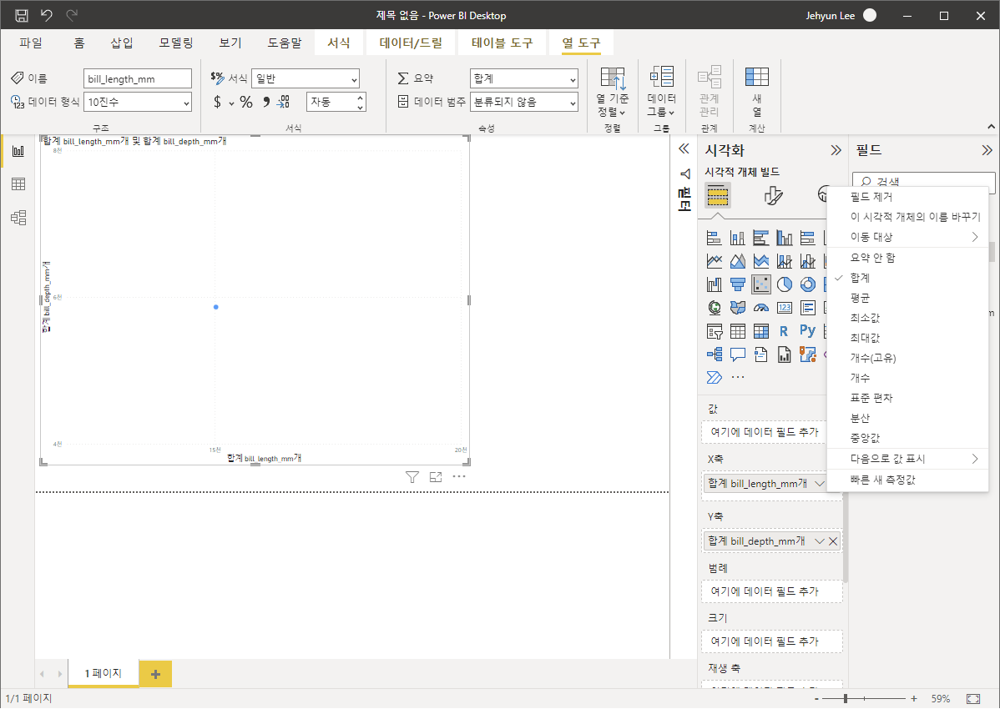
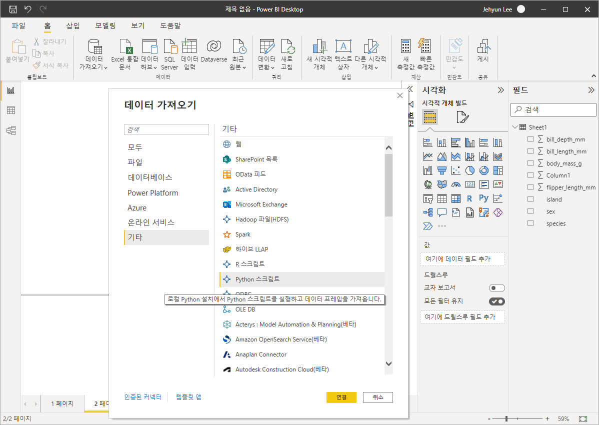

- Microsoft가 출시한 Power BI는 강력합니다.
- 윈도 환경에서 데이터를 쉽게 시각화할 수 있을 뿐 아니라
- 온라인 배포를 통해 동료와 공유하기도 쉽습니다.
- 한편으로 데이터 불러오기, 전처리, 시각화를 python script로 할 수도 있습니다.
- 공식 문서도 풍부하여 익히기 좋습니다.
1. Power BI 설치
Power BI Desktop은 무료로 Microsoft Store에서 설치합니다.
파일을 다운받아 설치할 수도 있지만 직접 다운받으면 다음과 같은 이점이 있다고 합니다.
- 자동 업데이트: 최신 버전이 제공되는 즉시, Windows가 백그라운드에서 자동으로 다운로드하므로 항상 최신 버전이 유지됩니다.
- 필요한 파일만 다운로드: Microsoft Store는 각 업데이트에서 변경된 구성 요소만 사용자 머신에 다운로드하므로 각 업데이트에 필요한 파일만 다운로드됩니다.
- 관리자 권한이 필요하지 않음: 패키지를 직접 다운로드하고 설치하는 경우 설치가 성공적으로 완료되려면 관리자여야 합니다. Microsoft Store에서 Power BI Desktop을 가져오는 경우에는 관리자 권한이 필요하지 ‘않습니다’.
- IT 롤아웃 사용: 비즈니스용 Microsoft Store를 통해 조직의 모든 사용자에게 Power BI Desktop을 보다 쉽게 배포하거나 ‘롤아웃’할 수 있습니다.
- 언어 감지: Microsoft Store 버전은 지원되는 언어를 모두 포함하며, 시작할 때마다 컴퓨터에서 사용되는 언어를 확인합니다. 이 언어 지원은 Power BI Desktop에서 만든 모델의 지역화에도 영향을 줍니다. 예를 들어 기본 제공 날짜 계층 구조는 .pbix 파일을 만들 때 Power BI Desktop에서 사용 중인 언어와 일치합니다.
2. 데이터 불러오기
그림으로 표현할 데이터를 불러옵니다.
엑셀 파일, SQL 서버, 붙여넣기를 제공하고 샘플 데이터를 사용할 수 있습니다.
또한 파이썬 스크립트를 사용해 데이터를 불러올 수 있습니다.
엑셀 파일과 파이썬 스크립트를 사용해 데이터를 불러 scatter plot을 그리겠습니다.
2.1. 엑셀 파일 불러오기
Excel 파일에서 데이터 가져오기를 클릭하고 파일을 선택합니다.
seaborn의 펭귄 데이터셋을 추출한 파일을 선택합니다.
Sheet를 선택하면 데이터 일부가 화면에 출력됩니다.
결측치는 null 이라고 표현됩니다.
[로드]를 누르면 PowerQuery로 넘어갑니다.
- Power Query에서 전처리를 적용할 수 있습니다.
- 여기서는 매뉴의 맨 왼쪽, [닫기 및 적용]을 눌러 그대로 가져옵니다.
- 창을 닫아도 마찬가지로 동작하며, 이제 그림을 그릴 준비가 되었습니다.
- 그림이 그려질 공간과 함께 [시각화] 메뉴에 다양한 선택지가 보입니다.
- 왼쪽 위부터 3행 3열에 있는 버튼을 클릭해 산점도를 그립시다.
- 산점도를 클릭하면 왼쪽에 네모난 공간이 생깁니다. 마우스로 크기와 위치를 정합니다.

- 데이터를 지정할 차례입니다.
- [시각화] 메뉴 아래 있는[X축], [Y축]에 인자를 끌어다 놓습니다.
- 여기서는
bill_length_mm와bill_depth_mm를 선택했습니다. - 기본값으로 합계가 선택되어 점이 하나밖에 나오지 않습니다.
- 우클릭을 하거나 v 버튼을 눌러 [요약 안함]을 누릅니다.
- 범례에
species를 추가하면 종에 따라 다른 색이 입혀집니다.
- 일단 여기에서 정리하고 파이썬으로 불러보겠습니다.
- 화면 왼쪽 하단 1 페이지 옆에 있는 +를 눌러 새 페이지를 엽니다.
2.2. 파이썬으로 불러오기
Microsoft Learn: Power BI, Power BI Desktop에서 Python 스크립트 실행
- 먼저 파이썬이 설치되어 있어야 합니다.
- [파일] > [옵션 및 설정] > [옵션] > [Python 스크립팅]을 선택합니다.
- 설정이 되어 있다면 자동으로 검색된 경로를 가져옵니다. 필요하다면 다른 경로를 지정할 수 있습니다.
- 상단 메뉴의 [데이터 가져오기] > [기타] > [Python 스크립트]를 선택합니다.

- 데이터를 로딩하는 파이썬 스크립트를 작성합니다.
seaborn을 읽어들여 내장된 펭귄 데이터셋을 부릅니다.
- 엑셀로 불렀을 때와 동일한 화면이 나옵니다.
- 앞에서 진행한 것과 같은 단계를 거치면 동일한 결과를 얻을 수 있습니다.
3. 파이썬 데이터 처리
- 내장 파이썬 스크립트를 사용해 데이터를 처리하겠습니다.
bill_length_mm와bill_depth_mm의 비율을 구해bill_ratio라는 새 인자를 만듭니다.- 데이터 이름인
df_peng에서 오른쪽 클릭을 한 후 쿼리 편집을 선택합니다.
- 데이터를 처음 불렀을 때와 마찬가지로 Power Query가 실행됩니다.
- 상단 메뉴에서 [변환] > [스크립트] 중 [Python 스크립트 실행]을 선택합니다.
- 파이썬 스크립트를 입력합니다.
- Power BI 내부의 데이터 이름은 dataset입니다.
bill_ratio를 구하는 코드를 다음과 같이 입력합니다.

- [확인]을 누르면 스크립트가 실행됩니다.
- [Table]을 클릭하면 하단에 데이터가 펼쳐집니다.
- [Table]을 우클릭 후 [새 쿼리로 추가]를 선택합니다.
- 새로 추가된 쿼리에서 데이터 형식을 지정할 차례입니다.
- 수치 데이터를 선택한 후 [형식 변경]에서 적절한 형식을 선택합니다.
- 여기서는 10진수를 선택해 수치형으로 변경했습니다.
- 상단의 수식에서
type number를 추가해도 좋습니다. 변수가 많을 경우 이게 더 편합니다.
- 처리한 데이터를 그림으로 표현할 차례입니다.
- Power Query를 닫고 돌아온 창에서 x축에
bill_ratio, y축에body_mass_g, 그리고 범례에species를 입력하면 아래와 같은 그림이 그려집니다.
4. 결론
- Power BI는 상당히 많은 기능을 가지고 있습니다.
- 저도 이제 막 시작했지만 차분히 알아가려고 합니다.
- 파이썬도 함께 활용할 수 있으니 많은 분들이 잘 사용하시면 좋겠습니다.